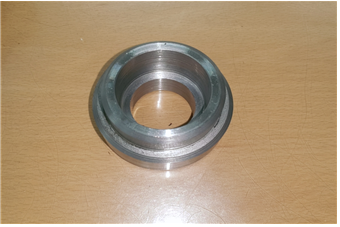
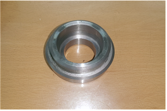
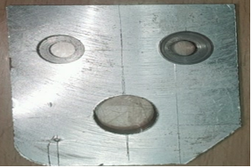
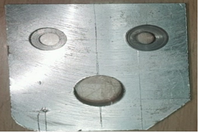
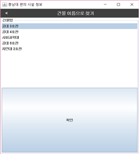
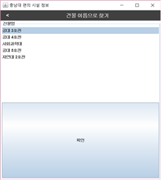

< 수빈이 작업관>

대학교에 입학하고 부터 시작해 진행해봤던 프로젝트들을 한 군데 모아놓은 포트폴리오 형 웹문서에오
예쁘게 봐주세오.
기계공작 실습
개요
주어진 도면에 따라 각기 다른 도구들을 통해 과제를 수행한다.
선반
회전하는 원통형 재료를 깎는다. 재료가 회전하고, 드릴은 고정된 채 축이 이동하는 방식이다.
도면
결과
 


결합
밀링
고정된 평평한 재료를 깎는다. 재료는 고정되어 있고, 드릴이 회전하며 축이 이동한다.
도면
결과
 

용접
여러 용접 방식중 아크 용접을 실습한다. 감전되지 않게 조심하며 순서를 잘 지켜야 한다. 수평각도와 수직각도를 잘 지키며 실습한다.
방법


결과


컴퓨터 응용 제도
Parametic CREO
Hand blender
Parametic CREO를 이용 해 실측한 [핸드 블렌더]를 모델링 했다. 볼트, 너트 등 체결 부품들을 실제 사이즈에 맞게 모델링하고, 외형과 내형도 곡선 부분을 매끄럽게 모델링한다. 어셈블을 통해 모델링된 각 부품들이 서로 맞는지 확인하고, 맞닿는 면이나 축을 통해 부품을 고정한다. 완벽히 고정된 부품들을 메카니즘을 통해 구동을 확인하고, 애니메이션을 제작한다. 프로젝트 기준이 부품이 40개 이상이었고, 메카니즘이 확실히 보여야 했기 때문에 적절하게 핸드 블렌더를 선택했다.
메카니즘 구동 영상 및 애니메이션 영상
모터와 체결부품들의 메카니즘 영상과 3D 조립 모습을 보여주는 애니메이션 영상이다.
전자회로 실험
익스트림 오토매틱 핀볼
밝기 변화감지를 통해 공이 굴러왔음을 알고 자동으로 게임을 진행하는 핀볼이다.
구성
디지털 소자나 MCU 등을 일체 사용하지 않고 아날로그 소자만을 사용해 제작했다. 조도 센서를 사용 해 핀볼이 막대를 가리면 OP-AMP에 입력되는 전압이 전압분배 법칙에 의해 변화한다. 이를 통해 비교기에서 일정 센서값이 되면 가렸음을 인식하고, MOSFET에 신호를 준다. MOSFET은 솔레노이드에 입력되는 전압을 증폭 시키기 위해 사용된다.
하드웨어
왼쪽은 시뮬레이션 프로그램(orCAD)에 의해 분석된 회로도의 모습이고, 오른쪽은 구성한 실제 회로이다.

시연 영상
공이 부딪히며 내려와 막대에 닿으면 자동으로 솔레노이드가 동작 해 공을 다시 튕기는 것을 볼 수 있다.
디지털회로 실험
두더지 잡기
짝이 이뤄진 LED와 스위치를 통한 두더지 잡기 게임이다. LED가 켜지는 것이 두더지가 올라왔음을 의미하고, 스위치를 누르는 것을 두더지를 잡는것을 의미한다.
구성
디지털 논리 소자들을 조합해 MCU 없이 논리를 조합한다. 555타이머 3개를 사용 해 주파수가 다른 2개의 펄스를 발생시키고, 2개의 펄스의 비해 느린 주파수의 펄스 하나를 발생시킨다. 2개의 빠른 펄스는 각각 JK-FlipFlop에 입력되어 0부터 하나씩 증가해 3까지 4bit를 가산기 출력을 뽑아낸다. 0부터 3까지 서로 다른 속도로 증가하는 두 세트가 느린 펄스를 받는 D-FlipFlop의 입력으로 들어가 값이 capture 된 채 유지된다. 이 값이 2 to 4 Decoder로 입력되어 한 비트씩 할당받게 되고, 이는 각각 서로 다른 AND 소자의 입력으로 들어간다. 스위치가 눌리면 VCC, 눌리지 않는 동안은 GND가 연결되게 회로를 연결 해놓고, 이 입력을 AND 소자의 나머지 입력으로 넣는다. AND 소자의 출력을 모두 OR 소자로 묶어 하나의 비트로 나오게 한다. D-FlipFlop의 출력은 AND 소자의 입력으로 들어가기도 하지만, 할당된 LED에 연결되기도 해 두더지 역할을 한다. 즉, OR 소자의 출력은 두더지 역할을 하는 LED가 켜졌을 때 사용자가 그에 맞는 스위치를 누를 때 1인 것이다.
하드웨어
3T의 MDF 커팅을 위한 레이져 커터를 사용하기 위해 AutoCAD로 작업한 2D 도면과 완성하고 난 후 회로 모습이다.


시연 영상
LED가 켜진 곳의 버튼이 눌렸을 때만 정답 LED가 켜지고, 이외에는 반응하지 않는 모습이다. 사람의 기준에서 랜덤이라 할 수 있는 확률로 한번에 2쌍의 LED가 켜지는 것을 볼 수 있다.
디지털 신호처리
상보필터
LPF와 HPF를 조합한 상보필터를 설계한다.
개요
차후에 개발자로서 한번쯤 자율주행 세그웨이를 만들어 보고 싶다는 생각에 가속도, 자이로, 기울기 센서가 탑재된 시스템을 구성했다.
모터를 제어하는 과정은 포함되지 않았고, 센서를 통해 들어온 raw data에 필터를 거쳐 노이즈를 제거한다.
가속도 센서를 통해 입력된 가속도는 Low pass filter를 거치고, 자이로 센서를 통해 입력된 각가속도는 High pass filter를 거친다.
이 때, 서로 필터링 되는 주파수 경계를 잘 정해 Complementary filter가 되게 한다.
가속도와 각가속도를 통해 각도를 구하는 식을 이용해 출력은 각도로 나오게 된다.
이 각도가 차후에 제어과정의 입력이 된다.
발표 자료
아래 발표자료 영상에 직접 구성한 MATLAB Simulink 필터 시스템과 sin파로 발생시킨 input에 따른 ouput이 비교되어 있다. Analog filter가 아닌 digital filter를 사용하기 위해 sampling한 data 이므로 continuous한 input에 비해 discrete한 ouput이 나온것을 볼 수 있다.
주니어 창의 SW 경연대회

절대 혼자가 아니야, 도어락
블루투스 통신을 이용해 도어락을 제어한다. 침입자 발생 시, 경고알림과 함께 문을 봉쇄한다.
개요
혼자 사는 자취생들 같은 경우, 계약이 끝나갈 때 쯤에 집주인들이 집을 보여주기 위해 허락없이 문을 따고 들어오는 경우가 많다. 이는 불법침입에 해당하지만 학생의 입장으로서 따로 취할 수 있는 조취가 없다. 혼자 살지 않더라도, 가족 구성원 모두가 집을 비울 때 사생활 공간이나, 귀중품들이 담겨있는 곳은 언제나 불안할 수 있다. 혹은 아는 사람이 잠시 집에 왔을 때, 비밀번호는 알려주기 싫고 문은 열워줘야 하는 사람을 위해 개발된 도어락의 프로토 타입이다.
기능
어플과 블루투스 통신을 이용한다. 어플을 통해 Lock, Unlock, Close 제어를 할 수 있다. 도어락이 설치되는 곳마다 조도의 차이가 있으므로 처음 설치 시 센서 튜닝을 실시한다. 이 튜닝을 통해 문이 열렸을 때와 닫혔을 때의 값을 조정한다. 사용자가 문을 닫고 나간 후 Detect mode를 시작하면, 조도 변화를 감지해 문이 열렸음을 인식한다. 인식하면 사용자의 휴대폰으로 침입자가 발생했다는 알림이 가고, Lock 제어에 문을 닫아버리는 Close 제어와 Lock제어가 결합된 기능이 추가된다. 사용자가 어플에서 침입자가 아님을 알려주면, Close 제어가 초기화 되고 잠금이 풀려 침입자 발생 전 Detect mode로 돌아간다.
발표 자료
구동 영상
결과

고급 JAVA Progamming
충남대학교 편의시설 위치 서비스
개요
충남대학교 사이트에 등록된 지도에는 각각의 건물들이 위치한 지도는 볼 수 있지만, 그 건물 내부도는 알 수 없다. 처음 가보는 건물의 화장실이나, 정수기의 위치를 몰라 교양을 들을 때 난감했던 기억을 토대로 건물의 층별로 편의시설 위치를 표시하는 프로그램을 만들었다.
구성

 


첫번째 사진은 서비스가 로딩되었을 때의 메인화면이다. 이후에 이후에는 선택에 따라 지도에서 건물을 선택하거나, 목록에서 건물을 선택하면 마지막 사진으로 넘어가 전체 정보를 보거나 원하는 편의시설의 정보만 볼 수 있다. 기본적인 자바 GUI에서는 안드로이드 처럼 GPS 기반 구글맵이 되지 않아 캡쳐된 사진에 절대좌표를 이용한 지도이다. 전체 프로젝트 중 편의 시설에 따라 이미지의 색깔을 뽑아내는 부분을 담당했다. 이는 자바의 Bufferd Image 라이브러리를 이용했다.
창의 설계입문
태양전지 자동차
개요
아직 1학년이므로, 전공 지식이 부족해 태양전지 자동차 키트를 이용하여 하드웨어만 재활용품을 이용해 제작해본다. 전체 하드웨어의 무게, 디자인을 가중치에 따라 점수를 매긴다. 총 2번의 경기 순위도 성적에 포함된다. 무게와 공기저항을 줄일 수 있는 재활용품으로 빨대를 선택했다.
만드는 과정
완성작

결과
무게는 0.09kg으로 측정되었다. 경주 시간을 정오로 착각해 태양열 패널을 0도로 밀착해 부착했는데, 오후 3시였어서 태양열을 많이 받지 못해 출력이 약해져 낭패를 봤다. 또한 바퀴가 많이 정교하지 못해 앞으로 갈 수록 방향이 휘어져 도로를 이탈했다. 1 경기 4등, 2 경기 7등으로 마무리 했다.
학과 소개
메카트로닉스 공학과?
메카트로닉스(Mechatronics)는 기계공학(Mechanics)과 전자공학(Electronics)의
합성어로 컴퓨터 제어 및 정보처리 기술 등과 같은 전자공학에서 발전시킨 기술을 기계공학에 적용하는 새로운 기술 분야이다.
교양과목(수학, 물리학, 프로그래밍언어 등)을 통해 공학의 기초 소양을 쌓고, 동역학, 고체역학, 기계공작법, 전자회로실험, 디지털회로실험 등을 전공 기초과목으로 이수한 후
기계시스템, 전기전자시스템, 컴퓨터시스템, 융합시스템 분야로 나누어진 메카트로닉스공학의 응용기술을 배운다.
이처럼 메카트로닉스공학과 전공과정에서는 기계 및 전자시스템의 특성을 이해하고 컴퓨터제어시스템 분석 및 설계에 관한 체험적 전문지식을 습득할 수 있도록 이론과 실습을 겸비한 종합적인 교육을
실시한다.
학과 바로가기

국방무인 시스템 공학과?
국방 무인 시스템과 관련한 기계 및 전기/전자 요소 기술에 대한 기본적 이해를 바탕으로 관련된 SW를 창의적으로 설계
제작할 수 있는 실무형 인력 양성을 목표로 하는 과정이다.
2개 이상의 학과·학부·전공 간 합의하여 융합학문 교육을 위해 운영하는 전공과정으로 본 과인 메카트로닉스공학과와 컴퓨터 융합학부의 교육과정을 연계해 듣는 과정이다.
메카트로닉스공학과에서는 수치해석, 디지털 회로실습, 인공지능 개론등이 속하며 컴퓨터 융합학부 과정에서는 모바일 프로그래밍, 웹 프로그래밍, 고급JAVA 프로그램 등이 있다.
사업단 바로가기
라인 트레이서 대회
대회 규칙?
일정한 거리를 두고 떨어져 있는 스타트 마크와 엔드 마크를 기준으로 경연 시간을 기록한다. 폐루프로 이루어진 맵에서 스타트 마크를 지나치고 엔드 마크를 지나치는 기준으로 시간을 기록하는데, 이 때 시작마크를 지나고 나서 멈추는 경우 기록으로 인정하지 않는다. 선을 이탈하는 라인아웃이 일어난 경우 경연 기록을 인정하지 않고 약 30초 쯤 패널티를 부과하는 곳도 있다. 각 대회에 따라 3분에서 5분까지 경연 시간이 다르며, 이 시간 안에 자유롭게 맵을 돌며 제일 빠른 기록을 경연 기록으로 인정한다.
라인 트레이서?


라인 트레이서는 말 그대로, 선을 추적하는 기능을 가진 자동차이다. 저역 통과 필터를 거진 적외선 센서의 값을 이용해, 하얀선과 검은선을 구분한다. 여러가지 알고리즘을 통해, 여러차례 기록을 측정하고, 기록이 빠른 순으로 순위가 결정된다.
적외선 센서
센서는 적외선 센서가 이용된다. 적외선 센서는 수광부와 발광부로 이루어지는데, 발광부는 적외선을 내뿜고 수광부는 적외선을 받아들인다. 라인트레이서가 달리는 맵이 검은색과 하얀색으로 이루어져 있으므로, 각각 반사하는 적외선의 양이 달라 맵을 돌기 전에 미리 튜닝과정을 통해 하얀색에서의 센서값과 검은색에서의 센서값을 각각 인식한다. 적외선은 인식하는 곳의 빛의 파장에 따라 조금씩 영향을 받기 때문에 경기장에서의 최적값을 위해 튜닝 과정을 거친다. 사용하는 모터의 종류에 따라 Step Motor 부문, DC Motor 부문으로 나뉘는데 Step Motor 부문에서는, 각각 8개의 발광부와 수광부를 가진다. 이 중 다섯개는 따라가는 선의 위치를 파악하는데 이용되고, 나머지 2개는 맵의 추가적인 정보를 얻는데 사용한다.
마이크로 컨트롤러
AVR의 ATmega 시리즈, DSP 등 참가자가 주로 사용하는 마이크로 프로세서를 사용한다. 본인은 ATmega128을 사용한다. dc 모터를 사용한다면, encoder 입력을 위해 dsp를 주로 사용한다.
모터
모터는 사용하는 모터 종류에 따라 step 모터와 dc 모터를 사용할 수 있다. 입문자는 대게 step 모터로 시작한다. dc 모터에 비해 느리고 안전하게 주행할 수 있으므로 라인을 벗어날 위험이 적기 때문이다. dc모터는 빠르게 달리다가 맵을 살짝 벗어나도 제어가 역동적인 dc 모터의 특성 덕분에 드리프트를 통해 다시 라인을 찾아갈 수 있다.
알고리즘
스텝모터 트레이서인 경우 적외선 센서 7개를 이용해 각각의 센서값을 실시간으로 얻는데, 이 센서 중 양 끝에 2개는 '마크'를 인식하는데 사용된다.
마크는 한번 나왔을 경우, 좌회전 이나 우회전을 알리고 같은 방향으로 한 번 더 나오면 직진으로 바뀜을 알리는 역할이다.
이를 통해 구간을 직선, 좌회전, 우회전으로 나눌 수 있다.
가운데 다섯개 센서는 각각의 센서에 가중치를 부여하고, 센서값을 곱한 뒤 사용하는 센서 개수로 나누는 방법을 사용해 현재 인식되는 하얀 선으로 부터 몸체가 어디에 위치해 있는지 계산한다.
이를 position 값으로 지정하고, PID제어를 통해 position값에 대한 error를 0과 가깝게 하며 선을 따라간다.
1차 주행 때 이 마크를 통해 구간의 방향과 길이를 MCU에 저장하고, 이를 통해 직선에서 가속하고 커브에서 감속하는 2차 주행으로 시간을 단축할 수 있다.
참가자에 따라 2차 주행, 3차 주행의 알고리즘은 모두 다르다.
주행?
1차 주행
코너에서는 코너의 기울기를 순간적으로 계산해 기울기에 맞춰서 속도를 조절하고, 직선에서는 사전에 지정된 빠른 속도로 가속한다.
(2019년 단국대학교 라인트레이서 대회)
2차 주행
코너에서는 1차 주행의 가감속과 같이 주행하고, 직선에서는 남은 거리와 현재 위치를 계산해가며 안정적이면서도 최대의 속도를 낼 수 있는 속도로 가속한다.
(2019년 단국대학교 라인트레이서 대회)
첫 번째 시도!
하드웨어 완성 실패로 대회 3개 중 하나는 출전하지 못하고, 나머지 2개 대회는 나가기 전에 탈주하였다.
두 번째 시도!
약간 부족한 하드웨어와 1차 주행 코드로 충남대학교 대회에 출전해 완주증을 받았다. 단국대학교 Freshman 부문에 출전해 1차 주행 + 가감속 코드로 장려상을 수상했다. 시립대학교 대회는 나가기 전에 거주할 곳이 없어 탈주하였다.
완성

결과

세 번째 시도!
모터를 출력이 좋은 새 모터로 교체하고, 무게 중심을 직선에서 가속하기 좋게 새 배터리로 배치했다.
1차 주행 + 가감속 + 2차 주행 + 3차 주행 (2차 주행의 다른 알고리즘) 코드로 완성했다.
충남대학교 대회에는 출전하지 않았고, 단국대학교 Expert 부문에서 장려상을 수상했다.
시립대학교 대회에 Freshman으로 출전 가능했으나, 양심상 Expert 부문에 참여해 장려상을 수상했다.
수빈이 단국대 주행영상 보러가기
수빈이 시립대 주행영상 보러가기
완성

결과